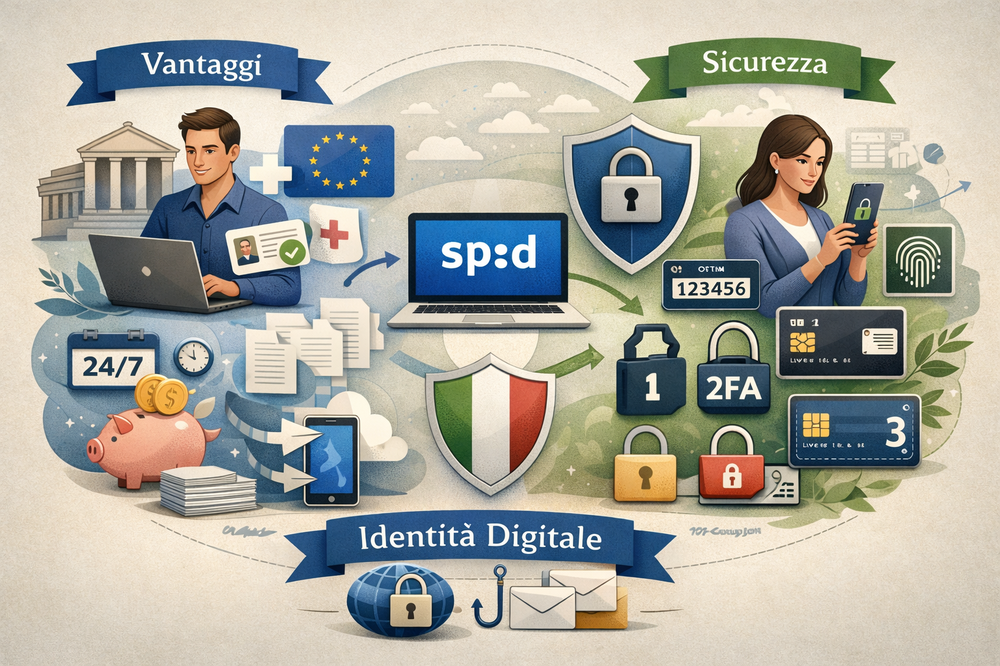

Benefici sistemici e architettura di sicurezza
L’adozione diffusa dell’identità digitale rappresenta uno dei passaggi più significativi nel percorso di digitalizzazione del Paese. Non si tratta soltanto di una comodità per accedere ai servizi online, ma di uno strumento che rende più efficiente il rapporto tra cittadini, imprese e pubblica amministrazione. La sua diffusione favorisce processi più rapidi, riduce la frammentazione degli accessi e contribuisce a una gestione più ordinata e controllata delle informazioni.
Un sistema di autenticazione centralizzato consente di uniformare l’accesso a numerosi servizi digitali, evitando procedure diverse per ogni portale. Questo semplifica l’esperienza dell’utente e rende più coerente l’intero ecosistema dei servizi pubblici e privati che adottano standard compatibili.

Vantaggi concreti per cittadini, imprese e amministrazioni
I vantaggi non riguardano soltanto la rapidità di accesso, ma anche la qualità complessiva del servizio. Una maggiore digitalizzazione permette di ridurre passaggi manuali, minimizzare gli errori e migliorare la tracciabilità delle operazioni. Questo produce effetti positivi sia per l’utente finale sia per gli enti che erogano i servizi.
- Un’unica esperienza di accesso: l’utente può autenticarsi con un sistema coerente e riconoscibile su più servizi online, senza dover ricordare credenziali diverse per ogni portale.
- Riduzione delle attese: molte operazioni possono essere svolte in autonomia, senza recarsi fisicamente agli sportelli e senza dipendere dagli orari di apertura.
- Maggiore efficienza amministrativa: la digitalizzazione riduce il carico di attività ripetitive e permette agli enti di concentrare risorse su attività più complesse.
- Tracciabilità delle operazioni: gli accessi e le richieste risultano più facilmente verificabili, migliorando controllo e organizzazione interna.
- Accesso ai servizi in qualsiasi momento: la disponibilità online consente di effettuare operazioni anche fuori dagli orari tradizionali.
- Riduzione dell’uso della carta: molti documenti e richieste possono essere gestiti in formato digitale, con benefici pratici e ambientali.
Un sistema pensato per proteggere l’identità dell’utente
La sicurezza è uno degli elementi centrali dell’intero sistema. L’obiettivo è permettere un accesso semplice ma affidabile, riducendo il rischio di usi impropri delle credenziali e aumentando il livello di fiducia nei servizi digitali.
La gestione dell’autenticazione è costruita secondo principi di proporzionalità: il livello di protezione richiesto dipende dalla delicatezza del servizio a cui si accede. In questo modo non tutte le operazioni hanno lo stesso grado di controllo, ma ogni contesto adotta misure adeguate al rischio.
L’architettura di sicurezza in tre livelli
Il sistema prevede più livelli di autenticazione, così da adattarsi alle diverse esigenze dei servizi digitali. Più aumenta la sensibilità dell’operazione, più cresce il livello di protezione richiesto.
- Livello 1: accesso con credenziali base fornite dal gestore dell’identità. È indicato per servizi a basso rischio o con informazioni poco sensibili.
- Livello 2: autenticazione a due fattori, che affianca alle credenziali un secondo controllo temporaneo. È il livello più usato per i servizi che richiedono maggiore affidabilità.
- Livello 3: livello di massima garanzia, pensato per operazioni particolarmente delicate o con forte impatto sulla sicurezza dell’utente.
Ruolo di AgID e regole comuni
AgID svolge una funzione centrale nella definizione delle regole tecniche, dei requisiti di sicurezza e dei criteri di affidabilità del sistema. Questo permette di avere standard omogenei e controlli coerenti, evitando che ogni soggetto adotti soluzioni incompatibili o troppo disomogenee tra loro.
La presenza di regole comuni è fondamentale perché un’identità digitale sia davvero utilizzabile su larga scala. Standard condivisi significano maggiore interoperabilità, maggiore fiducia da parte degli utenti e migliore qualità dei servizi.
Protezione dei dati e riservatezza
Uno dei punti più importanti riguarda il trattamento corretto dei dati personali. Un sistema di autenticazione digitale deve garantire che le informazioni dell’utente siano gestite solo per finalità legittime e in modo proporzionato allo scopo del servizio.
La protezione dei dati non dipende soltanto da controlli tecnici, ma anche da procedure organizzative chiare, responsabilità definite e comportamenti corretti da parte degli utenti. Per questo la sicurezza è il risultato di più elementi che lavorano insieme.
Rischi più comuni e comportamenti prudenti
Anche i sistemi più sicuri possono essere esposti a tentativi di frode se l’utente non presta attenzione. I rischi più frequenti non derivano solo da falle tecniche, ma anche da messaggi ingannevoli, siti falsi e richieste sospette di informazioni personali.
- Phishing: false comunicazioni che imitano enti o servizi ufficiali per sottrarre dati di accesso.
- Smishing e messaggi fraudolenti: SMS o notifiche ingannevoli che invitano a cliccare su link non affidabili.
- Riutilizzo delle credenziali: usare la stessa password su più siti aumenta il rischio in caso di violazione di un servizio esterno.
- Accessi da dispositivi non protetti: computer o smartphone non aggiornati possono esporre a minacce informatiche.
Un uso consapevole del servizio prevede attenzione ai link ricevuti, verifica dell’indirizzo del sito, protezione del dispositivo e conservazione riservata delle credenziali.
Perché la digitalizzazione migliora l’intero sistema
La diffusione dell’identità digitale non produce vantaggi solo per il singolo cittadino, ma anche per il funzionamento generale del sistema pubblico e privato. Quando l’accesso ai servizi è più semplice e controllato, diminuiscono gli errori, si accelerano i tempi di risposta e si crea un ambiente più ordinato e interoperabile.
Questo favorisce una pubblica amministrazione più moderna, capace di dialogare meglio con gli utenti e di offrire servizi più coerenti, accessibili e affidabili. Allo stesso tempo, contribuisce a diffondere una cultura digitale più matura e responsabile.